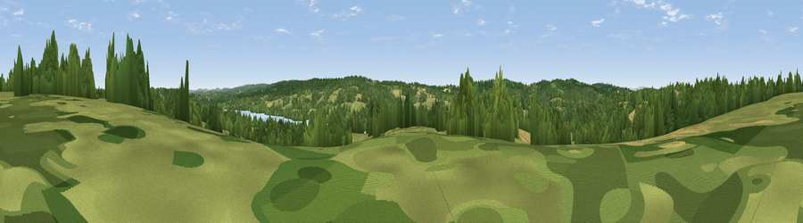

Viewpoint near East Grinstead
#33883 in England · top 51% of its area beats it · near East GrinsteadThe view, rendered

A 360° render of this exact spot computed from the terrain model, tree cover and land cover — summer colours, afternoon light, calibrated against photographs of famous viewpoints. Real trees, hedges and buildings will differ in detail.
The panorama
Grey silhouette: terrain skyline in each direction (720 bearings, Earth curvature and refraction included). Dashed green: skyline with trees (+15 m) and buildings (+8 m) as obstacles. Blue strip: how far the ground is visible on each bearing.
Where the view opens
Wedge length = distance to the farthest visible ground on that bearing (vegetation-aware). Rings at 10, 25 and 50 km.
What fills the view
45% woodland · 44% grassland · 6% cropland · 4% water · 1% built-up
Angular shares of the visible panorama (visual magnitude), not map area. Landscape diversity 0.47 (0–1 Shannon).
Key numbers
More beautiful places nearby
The staircase of upgrades: each row has a higher view potential than everything closer. Driving times are estimates from straight-line distance, calibrated against real road routing — check an actual route before setting out.
| Place | Direction | Drive | Score |
|---|---|---|---|
| Viewpoint near Sharpthorne | S · 3 km | ~8 min | 47.1 |
| Viewpoint near Sharpthorne | SSW · 4 km | ~9 min | 48.0 |
| Viewpoint near Turners Hill | W · 4 km | ~10 min | 51.6 |
| Viewpoint near Forest Row | ESE · 6 km | ~13 min | 52.6 |
| Dry Hill | NE · 8 km | ~16 min | 55.7 |
| Viewpoint near Upper Hartfield | ESE · 9 km | ~18 min | 59.6 |
| Viewpoint near Godstone | N · 15 km | ~27 min | 62.2 |
| Viewpoint near French Street | NNE · 18 km | ~31 min | 65.8 |
51.10225, -0.02000 · source: screening · position refined by local search. Computed location — check access rights before visiting.